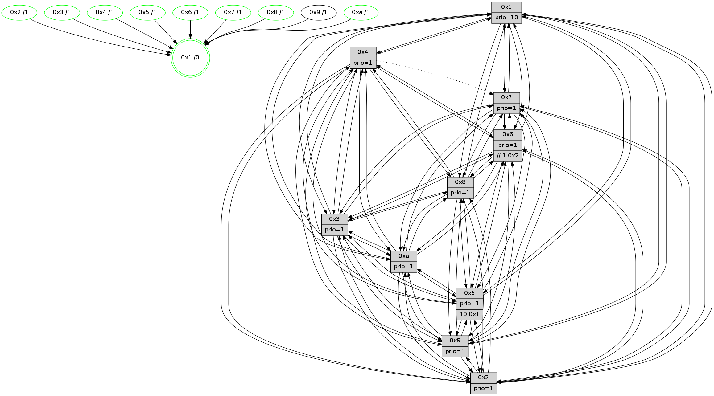

>> << IDX [start] -100 -25 -5 +0 +5 +25 +100 [1485.26734614]
 Previous packets
----------------------------------------------------------------------
1480.538557 beacon01(faad) #0 coord=01,02,03,04,05,06,07,0a,09,08 cycle=688.0ms assoc
-- color-indic=1 64 48 e9
1480.548539 beacon02(faad) #0 coord=01,02,03,04,05,06,07,0a,09,08 cycle=688.0ms assoc 64 db d8
1480.558539 beacon03(faad) #0 coord=01,02,03,04,05,06,07,0a,09,08 cycle=688.0ms assoc 64 a1 95
1480.568541 beacon04(faad) #0 coord=01,02,03,04,05,06,07,0a,09,08 cycle=688.0ms assoc 64 d6 7f
1480.578540 beacon05(faad) #0 coord=01,02,03,04,05,06,07,0a,09,08 cycle=688.0ms assoc 64 ac 32
1480.588541 beacon06(faad) #0 coord=01,02,03,04,05,06,07,0a,09,08 cycle=688.0ms assoc 64 22 e5
1480.598541 beacon07(faad) #0 coord=01,02,03,04,05,06,07,0a,09,08 cycle=688.0ms assoc 64 58 a8
1480.608545 beacon0a(faad) #0 coord=01,02,03,04,05,06,07,0a,09,08 cycle=688.0ms assoc 64 29 a3
1480.628547 beacon08(faad) #0 coord=01,02,03,04,05,06,07,0a,09,08 cycle=688.0ms assoc 64 dd 39
1480.639796 [STC(9)->4-.->1 #0.260 to-color d=2]
1480.641109 [Hello(1): seq=853 sym=4,2,9,5,10,3,8,6,7 sysInfo=coloring-mode-on,ColoringModeRequestCalled stat=4:3,10,3,4/2:11,5,13,6/9:4,2,12,2/5:7,15,2,11/10:14,8,3,8/3:5,5,2,12/8:0,6,15,5/6:1,15,15,3/7:3,8,6,2]
1480.644150 [Hello(5): seq=944 sym=7,6,4,3,1,9,8,10,2 sysInfo=hasWarning stat=7:9,6,7,1/6:4,8,1,0/4:0,13,15,0/3:12,6,2,3/1:13,1,12,0/9:14,1,4,11/8:12,4,14,6/10:10,2,10,9/2:14,1,1,8]
1480.647919 [Color(5) seq=480 @0:0 prio=1 >10.@1,1.@2,1.@3,1.@4]
1480.651003 [Color(10) seq=533 @0:0 prio=1]
1480.655433 [Hello(3): seq=944 sym=1,7,6,2,4,8,9,10,5 sysInfo=hasWarning stat=1:13,10,7,0/7:11,2,7,15/6:9,13,11,3/2:1,3,1,0/4:0,9,10,14/8:3,2,15,7/9:9,0,15,1/10:8,11,5,5/5:3,11,3,3]
1480.658580 [Hello(6): seq=944 sym=3,2,5,4,7,9,8,10,1 sysInfo=hasWarning stat=3:13,12,7,0/2:5,10,3,0/5:2,3,11,6/4:11,1,3,9/7:6,5,15,0/9:15,4,3,11/8:13,11,10,8/10:0,11,14,13/1:0,15,4,1]
1480.661577 [Color(3) seq=573 @0:0 prio=1]
1480.663253 [Hello(2): seq=940 sym=4,5,7,6,3,9,8,10,1 asym= sysInfo=hasWarning stat=4:11,5,3,14/5:14,9,7,4/7:11,4,5,2/6:1,2,1,0/3:0,15,6,2/9:10,3,12,10/8:8,1,14,14/10:9,14,14,11/1:7,14,15,0]
1480.666093 [Color(2) seq=520 @0:0 prio=1]
1480.668368 [Color(6) seq=576 @0:0 prio=1 >>1.@2,1.@3,1.@4]
----------------------------------------------------------------------
1481.326690 beacon01(faad) #0 coord=01,02,03,04,05,06,07,0a,09,08 cycle=688.0ms assoc
-- color-indic=1 64 f4 ec
1481.336671 beacon02(faad) #0 coord=01,02,03,04,05,06,07,0a,09,08 cycle=688.0ms assoc 64 67 dd
1481.346671 beacon03(faad) #0 coord=01,02,03,04,05,06,07,0a,09,08 cycle=688.0ms assoc 64 1d 90
1481.356674 beacon04(faad) #0 coord=01,02,03,04,05,06,07,0a,09,08 cycle=688.0ms assoc 64 6a 7a
1481.366672 beacon05(faad) #0 coord=01,02,03,04,05,06,07,0a,09,08 cycle=688.0ms assoc 64 10 37
1481.376673 beacon06(faad) #0 coord=01,02,03,04,05,06,07,0a,09,08 cycle=688.0ms assoc 64 9e e0
1481.386673 beacon07(faad) #0 coord=01,02,03,04,05,06,07,0a,09,08 cycle=688.0ms assoc 64 e4 ad
1481.396677 beacon0a(faad) #0 coord=01,02,03,04,05,06,07,0a,09,08 cycle=688.0ms assoc 64 95 a6
1481.406679 beacon09(faad) #0 coord=01,02,03,04,05,06,07,0a,09,08 cycle=688.0ms assoc 64 1b 71
1481.416678 beacon08(faad) #0 coord=01,02,03,04,05,06,07,0a,09,08 cycle=688.0ms assoc 64 61 3c
1481.428165 [Hello(9): seq=888 sym=2,5,3,4,7,6,8,10,1 sysInfo=hasWarning stat=2:13,12,8,12/5:0,1,0,0/3:10,1,4,6/4:10,12,1,3/7:9,4,1,5/6:11,14,7,1/8:9,3,0,8/10:8,12,2,0/1:1,4,2,1]
1481.432415 [Color(1) seq=624 @0:0 prio=10]
1481.433699 [Hello(8): seq=888 sym=5,2,3,7,9,6,4,10,1 sysInfo=hasWarning stat=5:9,5,15,3/2:1,3,10,13/3:11,5,14,5/7:8,2,2,0/9:13,6,0,5/6:3,4,10,1/4:4,10,7,2/10:2,7,7,5/1:15,7,4,0]
1481.436634 [Hello(4): seq=944 sym=5,8,6,2,3,9,10,1 asym=7 sysInfo= stat=5:8,1,1,4/8:3,7,1,0/6:1,11,12,2/2:15,12,4,2/3:15,7,11,0/9:14,15,6,2/10:5,7,13,14/1:9,2,4,1/7:6,13,3,0]
1481.441766 [Color(4) seq=483 @0:0 prio=1]
1481.443649 [Color(8) seq=543 @0:0 prio=1]
1481.446028 [Hello(7): seq=944 sym=2,3,5,6,8,9,10,1 sysInfo=hasWarning stat=2:6,8,3,5/3:14,1,4,5/5:13,2,5,5/6:1,14,3,13/8:0,1,0,0/9:2,15,0,2/10:7,15,10,7/1:7,10,15,0]
1481.449374 [Color(7) seq=472 @0:0 prio=1]
1481.453283 [Hello(10): seq=877 sym=6,2,3,8,7,5,9,4,1 sysInfo=hasWarning stat=6:10,4,8,5/2:7,10,10,1/3:10,15,0,15/8:4,15,11,5/7:13,9,8,10/5:13,14,3,3/9:6,6,8,1/4:15,13,5,3/1:1,7,2,1]
----------------------------------------------------------------------
1482.114821 beacon01(faad) #0 coord=01,02,03,04,05,06,07,0a,09,08 cycle=688.0ms assoc
-- color-indic=1 64 30 e2
1482.124804 beacon02(faad) #0 coord=01,02,03,04,05,06,07,0a,09,08 cycle=688.0ms assoc 64 a3 d3
1482.134804 beacon03(faad) #0 coord=01,02,03,04,05,06,07,0a,09,08 cycle=688.0ms assoc 64 d9 9e
1482.144804 beacon04(faad) #0 coord=01,02,03,04,05,06,07,0a,09,08 cycle=688.0ms assoc 64 ae 74
1482.154805 beacon05(faad) #0 coord=01,02,03,04,05,06,07,0a,09,08 cycle=688.0ms assoc 64 d4 39
1482.164805 beacon06(faad) #0 coord=01,02,03,04,05,06,07,0a,09,08 cycle=688.0ms assoc 64 5a ee
1482.174805 beacon07(faad) #0 coord=01,02,03,04,05,06,07,0a,09,08 cycle=688.0ms assoc 64 20 a3
1482.184809 beacon0a(faad) #0 coord=01,02,03,04,05,06,07,0a,09,08 cycle=688.0ms assoc 64 51 a8
1482.204809 beacon08(faad) #0 coord=01,02,03,04,05,06,07,0a,09,08 cycle=688.0ms assoc 64 a5 32
1482.216378 [Hello(1): seq=854 sym=4,2,9,5,10,3,8,6,7 sysInfo=coloring-mode-on,ColoringModeRequestCalled stat=4:4,11,3,4/2:12,6,13,6/9:5,2,12,2/5:8,0,2,11/10:15,9,3,8/3:6,6,2,12/8:1,7,15,5/6:2,0,15,3/7:4,9,6,2]
1482.220826 [Hello(6): seq=945 sym=3,2,5,4,7,9,8,10,1 sysInfo=hasWarning stat=3:13,12,7,0/2:5,10,3,0/5:2,3,11,6/4:12,2,3,9/7:7,6,15,0/9:0,4,4,11/8:14,12,10,8/10:1,11,14,13/1:1,0,4,1]
1482.223973 [Color(6) seq=577 @0:0 prio=1 >>1.@2,1.@3,1.@4]
1482.225837 [Hello(5): seq=945 sym=7,6,4,3,1,9,8,10,2 sysInfo=hasWarning stat=7:10,7,7,1/6:5,9,1,0/4:1,14,15,0/3:13,7,2,3/1:14,2,12,0/9:15,1,5,11/8:13,5,14,6/10:11,3,10,9/2:15,2,1,8]
1482.229304 [Color(5) seq=481 @0:0 prio=1 >10.@1,1.@2,1.@3,1.@4]
1482.231696 [Hello(3): seq=945 sym=1,7,6,2,4,8,9,10,5 sysInfo=hasWarning stat=1:14,11,7,0/7:12,3,7,15/6:9,14,11,3/2:2,4,1,0/4:1,10,10,14/8:4,3,15,7/9:10,0,0,1/10:9,11,5,5/5:3,11,3,3]
1482.234228 [Hello(2): seq=941 sym=4,5,7,6,3,9,8,10,1 sysInfo=hasWarning stat=4:12,6,3,14/5:14,9,7,4/7:12,5,5,2/6:1,3,1,0/3:0,15,6,2/9:11,3,13,10/8:9,2,14,14/10:10,14,14,11/1:8,15,15,0]
1482.238009 [Color(2) seq=521 @0:0 prio=1]
1482.239244 [Color(10) seq=534 @0:0 prio=1]
1482.249815 [Color(3) seq=574 @0:0 prio=1]
----------------------------------------------------------------------
1482.902953 beacon01(faad) #0 coord=01,02,03,04,05,06,07,0a,09,08 cycle=688.0ms assoc
-- color-indic=1 64 8c e7
1482.912935 beacon02(faad) #0 coord=01,02,03,04,05,06,07,0a,09,08 cycle=688.0ms assoc 64 1f d6
1482.922935 beacon03(faad) #0 coord=01,02,03,04,05,06,07,0a,09,08 cycle=688.0ms assoc 64 65 9b
1482.932935 beacon04(faad) #0 coord=01,02,03,04,05,06,07,0a,09,08 cycle=688.0ms assoc 64 12 71
1482.942936 beacon05(faad) #0 coord=01,02,03,04,05,06,07,0a,09,08 cycle=688.0ms assoc 64 68 3c
1482.952936 beacon06(faad) #0 coord=01,02,03,04,05,06,07,0a,09,08 cycle=688.0ms assoc 64 e6 eb
1482.962937 beacon07(faad) #0 coord=01,02,03,04,05,06,07,0a,09,08 cycle=688.0ms assoc 64 9c a6
1482.972940 beacon0a(faad) #0 coord=01,02,03,04,05,06,07,0a,09,08 cycle=688.0ms assoc 64 ed ad
1482.992942 beacon08(faad) #0 coord=01,02,03,04,05,06,07,0a,09,08 cycle=688.0ms assoc 64 19 37
1483.006067 [Hello(10): seq=878 sym=6,2,3,8,7,5,9,4,1 sysInfo=hasWarning stat=6:10,4,8,5/2:7,10,10,1/3:10,0,0,15/8:4,15,11,5/7:13,9,8,10/5:13,14,3,3/9:6,6,8,1/4:15,13,5,3/1:2,7,2,1]
1483.008758 [Hello(4): seq=945 sym=5,8,6,2,3,9,10,1 asym=7 sysInfo= stat=5:9,2,1,4/8:3,8,1,0/6:2,12,12,2/2:0,13,4,2/3:0,8,11,0/9:15,15,6,2/10:6,8,13,14/1:10,2,4,1/7:7,14,3,0]
1483.012128 [Hello(7): seq=945 sym=2,3,5,6,8,9,10,1 sysInfo=hasWarning stat=2:7,9,3,5/3:15,2,4,5/5:14,3,5,5/6:2,15,3,13/8:0,1,0,0/9:3,15,0,2/10:8,0,10,7/1:8,10,15,0]
1483.015126 [Color(4) seq=484 @0:0 prio=1]
1483.016404 [Color(7) seq=473 @0:0 prio=1]
1483.022945 [Hello(8): seq=889 sym=5,2,3,7,9,6,4,10,1 sysInfo=hasWarning stat=5:10,6,15,3/2:2,4,10,13/3:12,6,14,5/7:9,3,2,0/9:14,6,0,5/6:4,5,10,1/4:4,10,7,2/10:3,8,7,5/1:0,7,4,0]
1483.025753 [Color(8) seq=544 @0:0 prio=1]
1483.028714 [STC(1) #0.261 tree-change,inconsistent-stability,stable,to-color d=0]
1483.030651 [Color(1) seq=625 @0:0 prio=10]
----------------------------------------------------------------------
1483.691084 beacon01(faad) #0 coord=01,02,03,04,05,06,07,0a,09,08 cycle=688.0ms assoc
-- color-indic=1 64 b8 ff
1483.701067 beacon02(faad) #0 coord=01,02,03,04,05,06,07,0a,09,08 cycle=688.0ms assoc 64 2b ce
1483.711068 beacon03(faad) #0 coord=01,02,03,04,05,06,07,0a,09,08 cycle=688.0ms assoc 64 51 83
1483.721067 beacon04(faad) #0 coord=01,02,03,04,05,06,07,0a,09,08 cycle=688.0ms assoc 64 26 69
1483.731066 beacon05(faad) #0 coord=01,02,03,04,05,06,07,0a,09,08 cycle=688.0ms assoc 64 5c 24
1483.741068 beacon06(faad) #0 coord=01,02,03,04,05,06,07,0a,09,08 cycle=688.0ms assoc 64 d2 f3
1483.751067 beacon07(faad) #0 coord=01,02,03,04,05,06,07,0a,09,08 cycle=688.0ms assoc 64 a8 be
1483.761072 beacon0a(faad) #0 coord=01,02,03,04,05,06,07,0a,09,08 cycle=688.0ms assoc 64 d9 b5
1483.781072 beacon08(faad) #0 coord=01,02,03,04,05,06,07,0a,09,08 cycle=688.0ms assoc 64 2d 2f
1483.792318 [Hello(1): seq=855 sym=4,2,9,5,10,3,8,6,7 sysInfo=coloring-mode-on,ColoringModeRequestCalled stat=4:4,11,3,4/2:13,7,13,6/9:5,2,12,2/5:9,1,2,11/10:0,10,3,8/3:7,7,2,12/8:1,7,15,5/6:3,1,15,3/7:4,9,6,2]
1483.794756 [STC(4)->1 #0.261 tree-change,inconsistent-stability,stable,to-color d=1]
1483.797006 [STC(10)->1 #0.261 tree-change,inconsistent-stability,stable,to-color d=1]
1483.798624 [Hello(2): seq=942 sym=4,5,7,6,3,9,8,10,1 sysInfo=hasWarning stat=4:13,7,3,14/5:14,9,7,4/7:13,6,5,2/6:1,3,1,0/3:0,0,6,2/9:11,3,13,10/8:10,3,14,14/10:11,15,14,11/1:9,0,0,0]
1483.801238 [STC(9)->1 #0.261 to-color d=1]
1483.802696 [Hello(5): seq=946 sym=7,6,4,3,1,9,8,10,2 sysInfo=hasWarning stat=7:11,8,7,1/6:5,9,1,0/4:2,15,15,0/3:14,8,2,3/1:15,3,13,0/9:0,1,5,11/8:14,6,14,6/10:11,4,10,9/2:0,3,1,8]
1483.805853 [STC(5)->1 #0.261 tree-change,inconsistent-stability,stable,to-color d=1]
1483.810668 [Hello(6): seq=946 sym=3,2,5,4,7,9,8,10,1 sysInfo=hasWarning stat=3:14,13,7,0/2:6,11,3,0/5:3,4,11,6/4:13,3,3,9/7:8,7,15,0/9:0,4,4,11/8:15,13,10,8/10:2,12,14,13/1:2,1,5,1]
1483.813606 [Color(2) seq=522 @0:0 prio=1]
1483.815109 [STC(6)->1 #0.261 tree-change,inconsistent-stability,stable,to-color d=1]
1483.821537 [STC(7)->1 #0.261 tree-change,inconsistent-stability,stable,to-color d=1]
1483.822879 [Color(10) seq=535 @0:0 prio=1]
1483.825807 [STC(3)->1 #0.261 tree-change,inconsistent-stability,stable,to-color d=1]
1483.827763 [Color(3) seq=575 @0:0 prio=1]
----------------------------------------------------------------------
1484.479216 beacon01(faad) #0 coord=01,02,03,04,05,06,07,0a,09,08 cycle=688.0ms assoc
-- color-indic=1 64 04 fa
1484.489199 beacon02(faad) #0 coord=01,02,03,04,05,06,07,0a,09,08 cycle=688.0ms assoc 64 97 cb
1484.499198 beacon03(faad) #0 coord=01,02,03,04,05,06,07,0a,09,08 cycle=688.0ms assoc 64 ed 86
1484.509199 beacon04(faad) #0 coord=01,02,03,04,05,06,07,0a,09,08 cycle=688.0ms assoc 64 9a 6c
1484.519199 beacon05(faad) #0 coord=01,02,03,04,05,06,07,0a,09,08 cycle=688.0ms assoc 64 e0 21
1484.529201 beacon06(faad) #0 coord=01,02,03,04,05,06,07,0a,09,08 cycle=688.0ms assoc 64 6e f6
1484.539199 beacon07(faad) #0 coord=01,02,03,04,05,06,07,0a,09,08 cycle=688.0ms assoc 64 14 bb
1484.549204 beacon0a(faad) #0 coord=01,02,03,04,05,06,07,0a,09,08 cycle=688.0ms assoc 64 65 b0
1484.569205 beacon08(faad) #0 coord=01,02,03,04,05,06,07,0a,09,08 cycle=688.0ms assoc 64 91 2a
1484.581656 [Hello(9): seq=890 sym=2,5,3,4,7,6,8,10,1 sysInfo=hasWarning stat=2:14,14,9,12/5:2,3,1,0/3:11,3,5,6/4:12,14,1,3/7:11,6,2,5/6:13,15,8,1/8:11,5,0,8/10:9,14,2,0/1:2,6,3,1]
1484.584373 [Color(1) seq=626 @0:0 prio=10]
1484.585665 [Hello(7): seq=946 sym=2,3,5,6,8,9,10,1 sysInfo=hasWarning stat=2:7,9,3,5/3:15,3,5,5/5:14,3,5,5/6:2,15,3,13/8:1,2,0,0/9:3,15,0,2/10:9,1,10,7/1:8,11,0,0]
1484.588063 [Hello(8): seq=890 sym=5,2,3,7,9,6,4,10,1 sysInfo=hasWarning stat=5:11,6,0,3/2:3,5,11,13/3:12,7,15,5/7:9,3,3,0/9:14,6,1,5/6:4,6,11,1/4:4,10,7,2/10:4,9,7,5/1:0,8,5,0]
1484.592815 [Color(8) seq=545 @0:0 prio=1]
1484.594406 [Hello(4): seq=946 sym=5,8,6,2,3,9,10,1 asym=7 sysInfo=hasWarning stat=5:10,2,2,4/8:4,9,1,0/6:3,13,13,2/2:1,14,5,2/3:0,9,12,0/9:0,15,7,2/10:6,9,14,14/1:10,3,5,1/7:7,15,4,0]
1484.597942 [Color(4) seq=485 @0:0 prio=1]
1484.600295 [Color(7) seq=474 @0:0 prio=1]
1484.602152 [Hello(10): seq=879 sym=6,2,3,8,7,5,9,4,1 sysInfo=hasWarning stat=6:10,4,8,5/2:7,10,10,1/3:10,1,1,15/8:5,0,11,5/7:14,10,8,10/5:13,14,3,3/9:6,6,8,1/4:0,14,5,3/1:3,8,3,1]